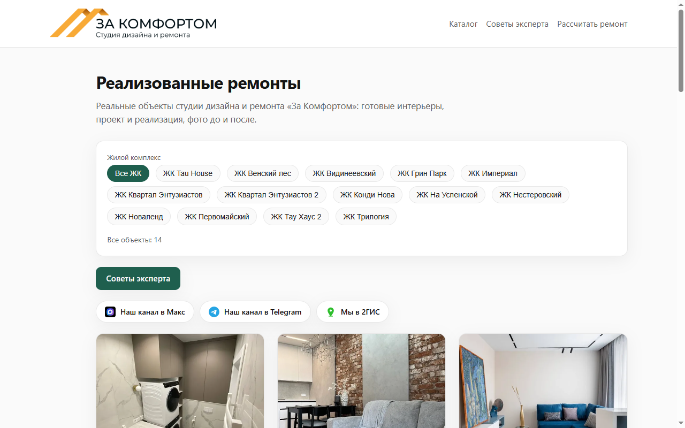
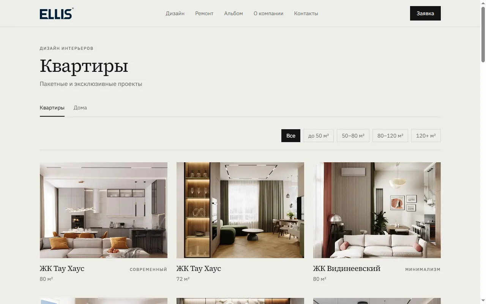

Case · 07
Catalog of completed renovations
For design studios, renovation, and construction: the project portfolio was a folder of photos and PDFs — the client never saw it nicely in one place.
- Catalogs
- 2 live sites
- Status
- live now
Example · Za komfortom

Example · Ellis

What I built
Catalog sites for design and renovation studios: projects by residential complex or area, photos, work descriptions, filters. Photos can be watermark-protected. New cases are added via a clear workflow, without a heavy CMS.
What you get
- A public catalog you can open in a meeting
- Filters, photos, plans, project cards
- Two live examples for different studios
Stack: HTML, CSS, JavaScript · deployed on GitHub Pages / Vercel.
Need a similar catalog for your projects? Describe the task →